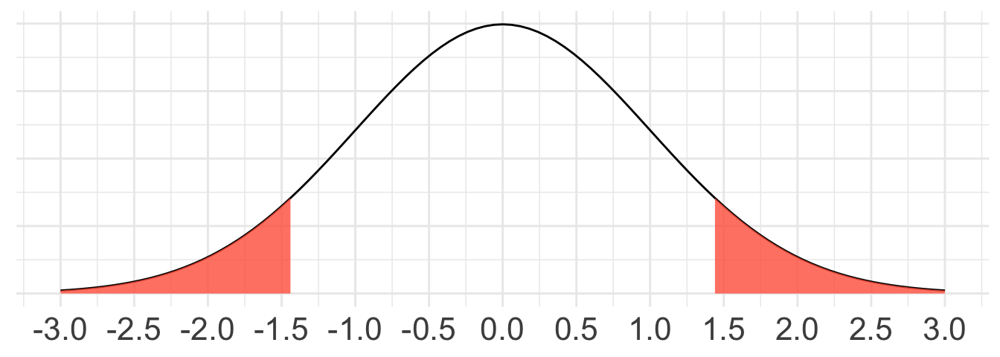

Test for single proportion with CLT
Housekeeping
Office hours today 2:30-3:30pm!
Project proposals due Wednesday
CLT recap
Start off with a sample of size \(n\). Assuming independent observations,
CLT for sample means
Assume population with mean \(\mu\) and standard deviation \(\sigma\). If normality condition met: \[ \bar{X} \sim N\left(\mu, \frac{\sigma}{\sqrt{n}}\right) \quad \text{or} \quad \bar{X} \overset{\cdot}{\sim} N\left(\mu, \frac{\sigma}{\sqrt{n}}\right) \]
Normality condition
- Exactly normal
- Not normal and \(n < 30\): no outliers
- Not normal and \(n \geq 30\): no particularly extreme outliers
CLT for sample proportions
Assume population proportion \(p\). If success-failure condition met: \[ \hat{p} \overset{\cdot}{\sim} N\left (p, \sqrt{\frac{p(1-p)}{n}}\right) \]
- Success-failure condition: \(np \geq 10\) and \(n(1-p) \geq 10\)
Hypothesis testing recap
Now we’re returning to hypothesis testing!
Two sets of hypotheses (competing claims)
Collect data, calculate a statistic from the observed data, set significance level
Obtain p-value from the null distribution
- p-value: probability of observing data as or more extreme as our own, assuming \(H_{0}\) true
Make a decision
Hypothesis testing using mathematical model
We learned how to conduct hypothesis tests (HTs) using simulation to obtain null distribution
But we can also use CLT to obtain null distribution!
So the only step that will “look different” is #3: how we obtain our null distribution and p-value
- Looks different depending on type of data
Make a conclusion in terms of \(H_{A}\)
Hypothesis test for single proportion
Steps 1 and 2 don’t change
Want to conduct a hypothesis test about a population proportion.
- Define hypotheses
\(H_{0}: p = p_{0}\)
\(H_{A}: p \neq p_{0}\) (or \(H_{A}: p > p_{0}\) or \(H_{A}: p < p_{0}\))
Remember, \(p_{0}\) is our “null hypothesized value”
- Collect data, set significance level
Obtain observed sample proportion \(\hat{p}_{obs}\)
Set \(\alpha\) significance level
Null distribution via CLT
Recall CLT for sample proportion: if we have \(n\) independent binary observations that satisfy the success-failure condition, then
\[ \hat{p} \overset{\cdot}{\sim} N\left(p, \sqrt{\frac{p(1-p)}{n}} \right) \]
This is the sampling distribution of \(\hat{p}\)
But we want the null distribution of \(\hat{p}\): the sampling distribution under \(H_{0}\)
We should operate in a world where \(H_{0}\) is true
So to use CLT for null distribution, we must satisfy:
Independence
Success-failure condition under \(H_{0}\): \(np_{0} \geq 10\) and \(n(1-p_{0}) \geq 10\)
Null distribution via CLT (cont.)
If succes-failure and independence conditions are met and \(H_{0}\) is true, then CLT tells us our null distribution is:
\[ \hat{p} \overset{\cdot}{\sim} N\left(p_{0}, \sqrt{\frac{p_{0} (1-p_{0})}{n}} \right) \]
This is how the sample proportion would behave assuming \(H_{0}\) is true!
We will use this to see how crazy our \(\hat{p}_{obs}\) is
Test statistic
p-value requires us to compare our observed data to the null distribution
We calculate a test statistic: a quantity that assesses how consistent our sampled data are with \(H_{0}\)
- Our test statistic is always of the form:
\[\frac{\text{point estimate} - \text{null value}}{\text{SE}_{0}}\] where \(\text{SE}_{0}\) represents the standard error under \(H_{0}\)
- For this specific test, our test statistic is the \(z\)-score of \(\hat{p}_{obs}\):
\[z =\frac{\hat{p}_{\text{obs}} - p_{0}}{\sqrt{\frac{p_{0} (1-p_{0})}{n}}}\]
- Because null distribution is Normal, this z-score follows \(N(0,1)\) distribution!
Obtain p-value
If \(|z|\) large, then that usually means observed value is extremely unusual for \(H_{0}\), which is convincing evidence against \(H_{0}\)
p-value is then \(\text{Pr}(Z \geq z)\) or \(\text{Pr}(Z \leq z)\) (or both), depending on \(H_{A}\)
- Easily obtained using
pnorm()
- Easily obtained using
Step 4: doesn’t change!
Example: taste test
Some people claim that they can tell the difference between a diet soda and a regular soda in the first sip. A researcher wanted to test this claim using a hypothesis test at the 0.05 significance level.
- He randomly sampled 80 people.
- He then filled 80 plain white cups with soda, half diet and half regular through random assignment, and asked each person to take one sip from their cup and identify the soda as diet or regular.
- 53 participants correctly identified the soda.
Let \(p\) be the proportion of people who correctly identify soda type.
Try defining \(H_{0}\) and \(H_{A}\).
Example: taste test (cont.)
Define hypotheses
\(H_{0}\): \(p = 0.5\) (random guessing)
\(H_{A}\): \(p > 0.5\) (better than random guessing)
Note: \(p_{0} = 0.5\) is our null hypothesized value!
Collect data
- \(\hat{p}_{\text{obs}} = \frac{53}{80} = 0.6625\)
- Note: significance level already determined to be 0.05
Example: taste test (cont.)
Obtain null distribution and p-value
Check conditions for inference satisfied
Independence: random sample
success-failure: \(np_{0} = 80(0.5) = 40 \geq 10\) and \(n(1-p_{0}) = 40 \geq 10\)
Because conditions for CLT are met, we can obtain the null distribution using CLT.
Null distribution
\[\hat{p} \overset{\cdot}{\sim} N\left(0.5, \sqrt{\frac{0.5(1-0.5)}{80}} = 0.056 \right)\]
Example: taste test (cont.)
Test statistic:
\[z = \frac{\hat{p}_{obs} - p_{0}}{\text{SE}_{0}} = \frac{0.6625 - 0.5}{0.056} = 2.90\]
This means that if \(H_{0}\) true, our observed \(\hat{p}_{obs}\) is 2.90 SDs above the mean
Does this seem like “convincing evidence”?
Example: taste test (cont.)
Calculate p-value (i.e. draw picture, set-up the calculation, and/or write code)
\[ \text{p-value} = \text{Pr}(Z \geq z) = \text{Pr}(Z \geq 2.90) \]
1 - pnorm(2.90, 0, 1)[1] 0.001865813Example: taste test (cont.)
Decision and conclusion
- Since our p-value of 0.0019 is less than our significance level of 0.05, we reject \(H_{0}\).
- The data provide strong evidence that the rate of correctly identifying a soda for these people is better than random guessing.
Example: M&M’s
M&M’s reported that 14% of its candies are yellow. We are interested in testing this claim. In a random sample of 100 M&M’s, 9 were found to be yellow. Conduct a hypothesis test via CLT at the \(0.10\) level.
Write out null and alternative hypotheses in statistical notation (don’t forget to define quantities)
Summarise data and set \(\alpha\)
Verify conditions for CLT are met
\(H_{0}: p = 0.14\) vs \(H_{A}: p \neq 0.14\), where \(p =\) true proportion of yellow M&M’s
\(\hat{p}_{obs} = \frac{9}{100} = 0.09\)
\(\alpha = 0.10\)
Independence? Yes, via random sample
Success-failure: Yes: \(np_{0} = 100(0.14) = 14 \geq 10\) and \(n(1-p_{0}) = 86 \geq 10\)
Because conditions for CLT are met, we can obtain the null distribution using CLT.
Example: M&M’s (cont.)
- Obtain null distribution and obtain observed test statistic
By CLT, our null distribution is \(\hat{p} \overset{\cdot}{\sim} N\left(0.14, \sqrt{\frac{0.14(1-0.14)}{100}} = 0.035 \right)\)
Test statistic:
\[z = \frac{\hat{p}_{obs} - p_{0}}{\text{SE}_{0}} = \frac{0.09 - 0.14}{0.035} = -1.43\]
Example: M&M’s (cont.)
- Obtain p-value. First draw a picture, then write out in \(\text{Pr}()\) notation and in code what we want to find.

Since \(H_{A}\) is two-sided, we want \[\begin{align*} &\text{Pr}(Z \leq -1.43 \cup Z \geq 1.43) \\ &= \text{Pr}(Z \leq -1.43) + \text{Pr}(Z \geq 1.43) \\ &= 2\times \text{Pr}(Z \leq -1.43) \\ \end{align*}\]
2 * pnorm(-1.43, 0, 1)[1] 0.1527172 * (1-pnorm(1.43, 0, 1))[1] 0.152717Example: M&M’s (cont.)
Make a decision and conclusion in context.
Since our p-value of 0.153 is greater than our significance level of 0.10, we fail to reject \(H_{0}\).
The data do not provide strong enough evidence to suggest that the true proportion of yellow M&Ms is different from 14%.
Comprehension questions
Why/how do the CLT conditions and/or statements change when obtaining:
Sampling distribution of \(\hat{p}\)
Null distribution of \(\hat{p}\)